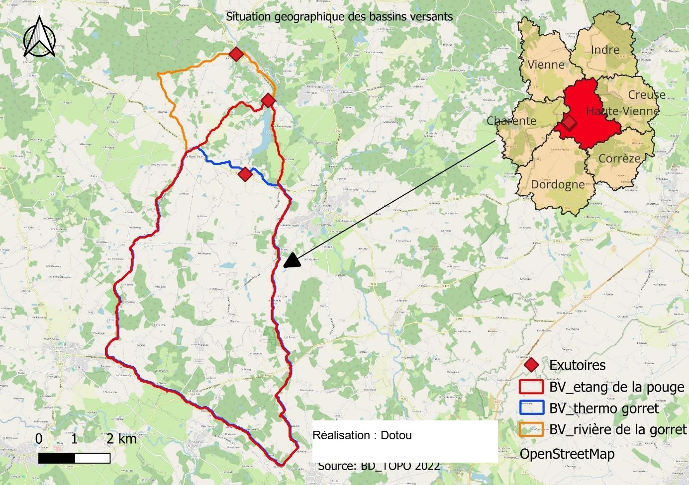
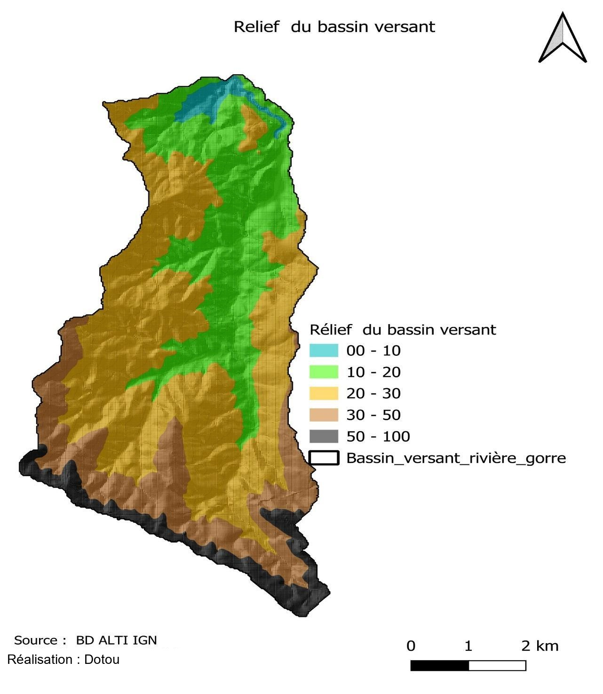
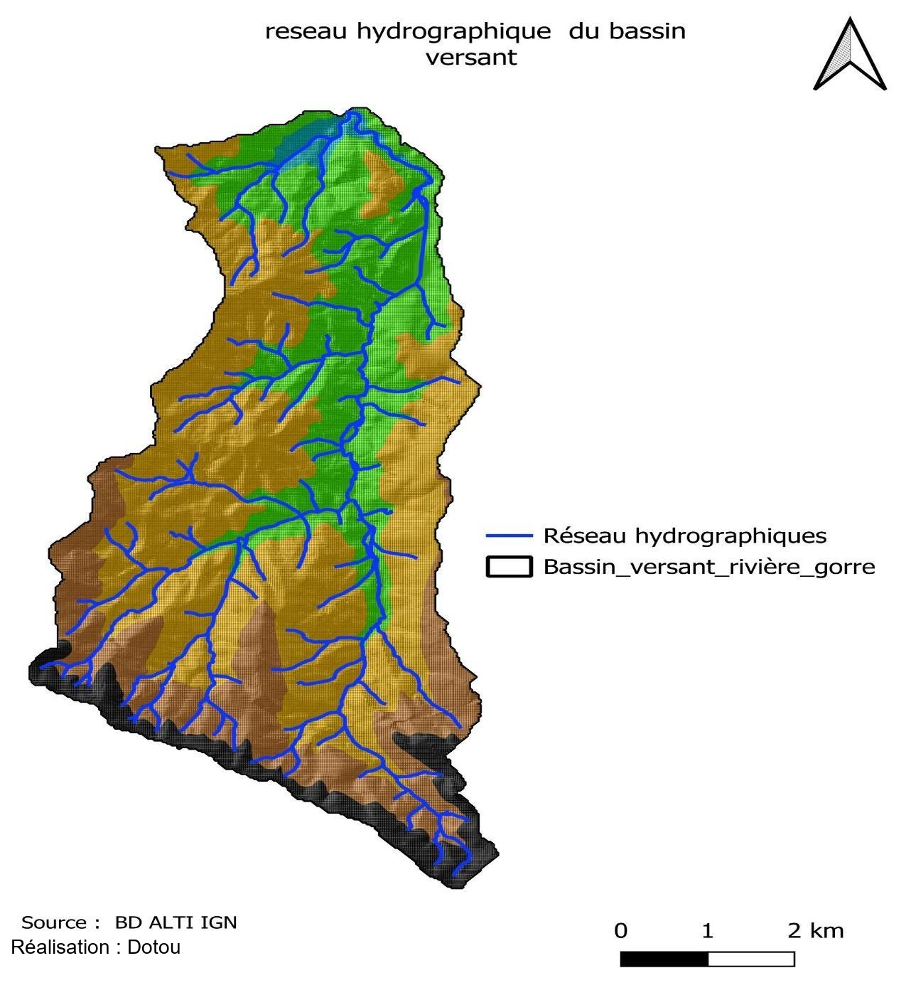
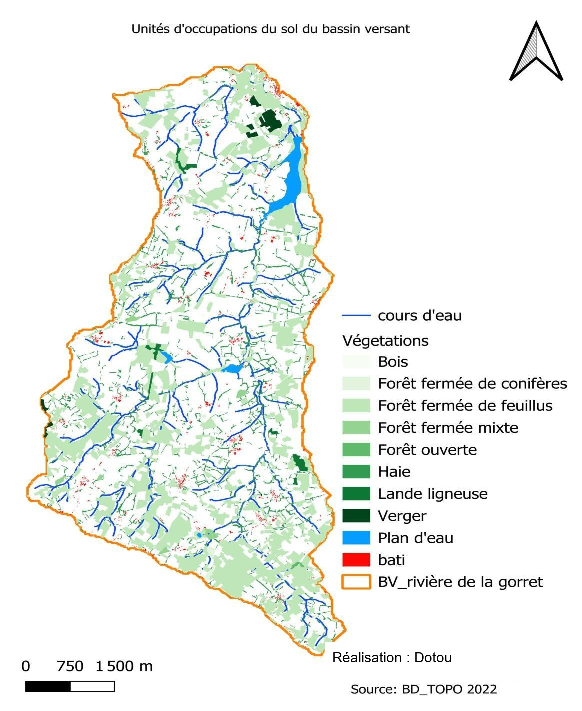
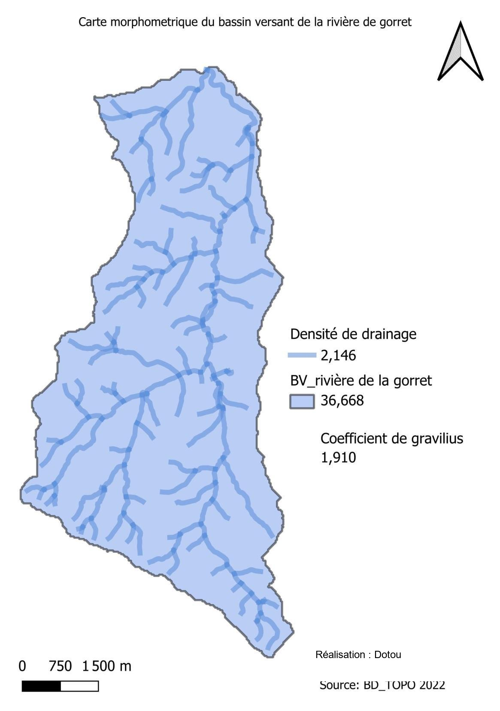
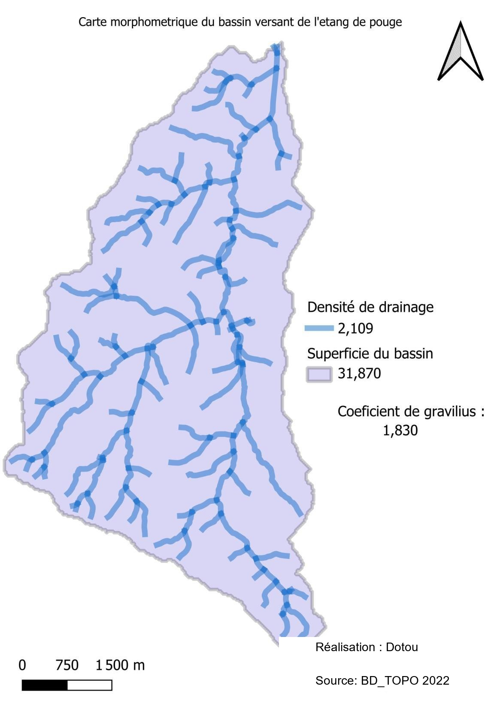

Géomatique, Limnologie, Environnement et Territoires · Université d'Orléans · UE Plan d'eau, Territoire, Limnosystème
Analyse morphométrique des bassins versants de Gorret et de la Pouge
Adapter les politiques de gestion aux territoires à partir d'indicateurs spécifiques à chaque plan d'eau
Contexte et objectif
L'étang de la Pouge et le cours d'eau Gorret, en Haute-Vienne (Nouvelle-Aquitaine), servent de cas d'étude pour examiner l'effet de l'occupation des sols et du relief sur la dynamique thermique et hydrologique des eaux. L'objectif est de cartographier les bassins versants concernés (celui de la rivière de Gorret, celui du site du thermomètre Gorret et celui de l'étang de la Pouge), puis de calculer leurs caractéristiques morphométriques (superficie, coefficient de Gravelius, densité de drainage), des indicateurs essentiels pour la gestion des ressources en eau et la planification de la préservation.

Démarche et outils
Les bassins versants ont été délimités sous QGIS à partir d'un Modèle Numérique de Terrain (BD ALTI) et du réseau hydrographique (BD TOPO), en recourant à des outils d'analyse hydrologique tels que GRASS r.watershed. Une carte du relief et une carte de l'occupation du sol ont ensuite été produites pour chaque bassin. Les indicateurs morphométriques ont été calculés à l'aide de la calculatrice de champs de QGIS : la superficie directement à partir de la géométrie, le coefficient de Gravelius à partir du périmètre et de la superficie du bassin, et la densité de drainage à partir de la longueur totale des cours d'eau rapportée à la superficie.





Résultats
Les trois bassins présentent des superficies comparables (28,5 à 36,7 km²) et un coefficient de Gravelius supérieur à 1 (1,76 à 1,91), signe d'une forme allongée qui ralentit la concentration des écoulements vers l'exutoire. Leur densité de drainage, élevée dans les trois cas (2,07 à 2,15 km/km²), traduit un réseau hydrographique dense et un ruissellement rapide plutôt qu'une forte infiltration. Ces indicateurs convergent vers un même profil : des bassins réactifs aux précipitations, où le drainage efficace des eaux de surface s'accompagne d'une sensibilité accrue aux épisodes pluvieux intenses et d'une recharge limitée des nappes phréatiques, à prendre en compte dans les choix d'aménagement du territoire.